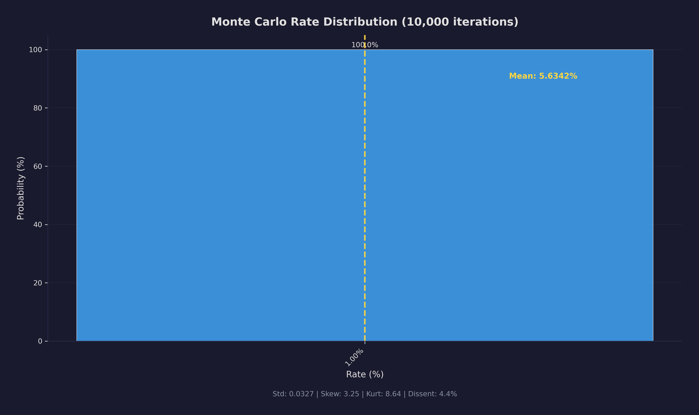
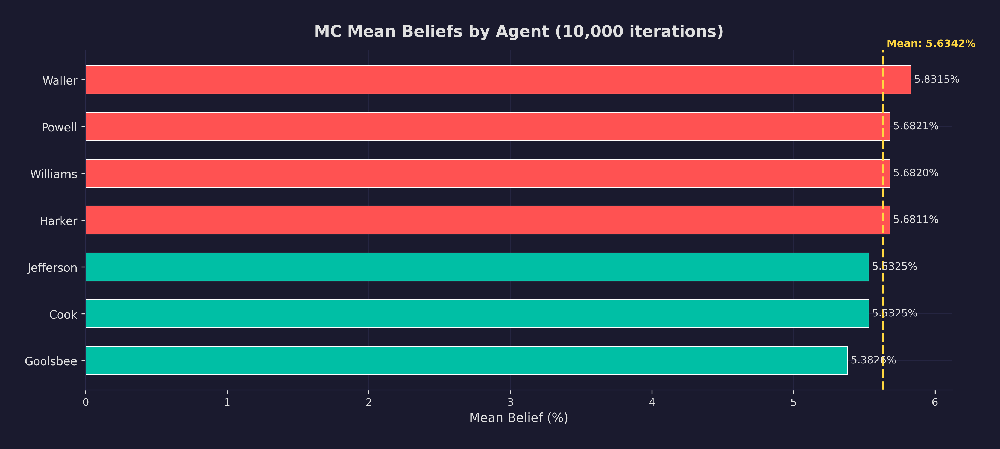
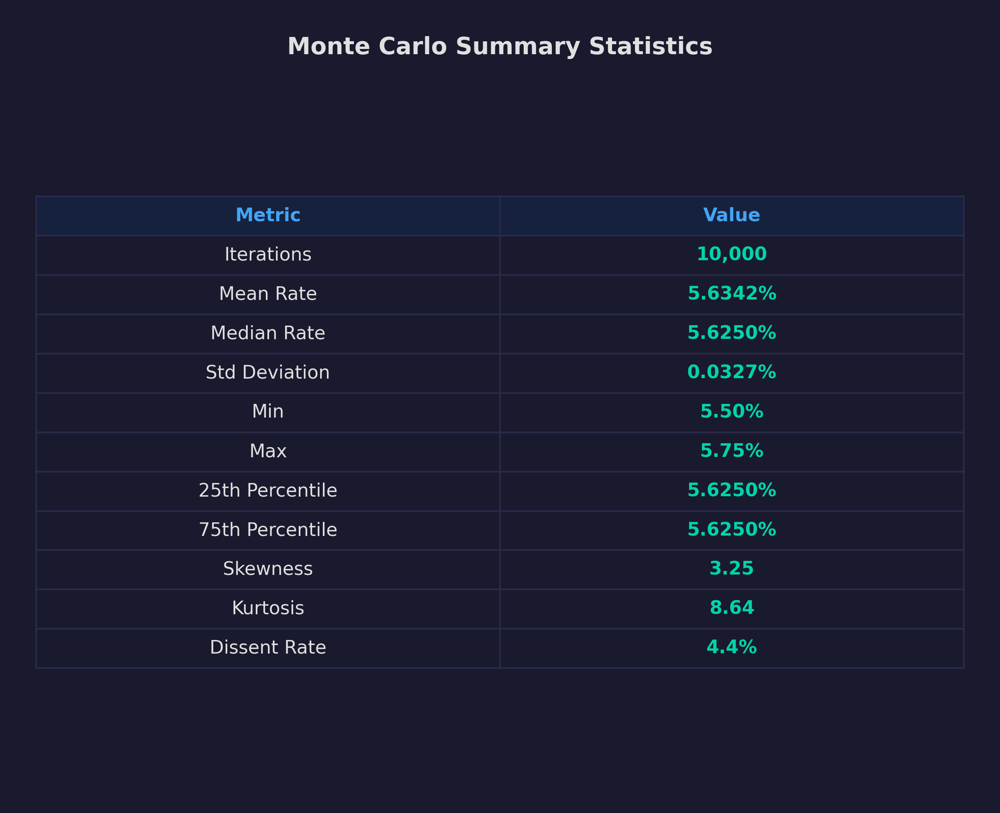

10,000 Committee Votes Per Second: Monte Carlo Meets Bayesian Inference
The statistical backbone of a dual-track FOMC simulation — conjugate priors, correlated signal models, game-theoretic dissent costs, and why zero LLM calls was a feature, not a limitation.
Eight times a year, twelve voting members of the Federal Open Market Committee decide the cost of money for the entire global economy. They argue, compromise, and eventually vote. Some dissent. The chair shapes the agenda. The result moves trillions of dollars.
I wanted to simulate that process — not with language models generating plausible-sounding text, but with a rigorous statistical engine that could run the committee decision 10,000 times and produce a probability distribution over outcomes. The result is the Monte Carlo Simulation Service: 5,149 lines of Python, zero LLM calls, pure numerical computation. It runs alongside the LLM deliberation track from last week's article, and the two approaches are compared downstream to see where they agree and where they diverge.
Beliefs as Gaussian Distributions
Every FOMC member is represented as an agent with a normal distribution over interest rates:
@dataclass
class FOMCAgent:
name: str
role: Literal["Chair", "Vice Chair", "Governor", "President"]
mu: float = 4.25 # Where they think rates should be
sigma: float = 0.40 # How confident they are
dissent_cost: float | None = None
The mu and sigma fully parameterize a belief. A hawkish agent might sit at mu = 4.75, sigma = 0.25 — rates should be higher, and I am quite sure. A dovish agent at mu = 3.50, sigma = 0.50 — lower rates, but more uncertain.
The dissent_cost captures institutional dynamics. The Chair has a cost of 10.0 — it is extraordinarily costly for the Chair to dissent — and since the Chair sets the proposal, this effectively anchors the committee. Regional bank presidents have a cost of 2.5. This asymmetry is calibrated from historical FOMC voting records where chairs almost never face dissent on their proposals, while presidents dissent in roughly 5-10% of meetings.
Conjugate Normal-Normal Updating
When an agent receives a noisy economic signal, they update beliefs using conjugate Bayesian updating. This is a closed-form solution — no MCMC sampling, no variational approximation, no numerical optimization. Just algebra.
The key insight is that precisions (inverse of variance) add:
def bayesian_update_single(mu_prior, sigma_prior, signal, sigma_signal):
tau_prior = 1.0 / (sigma_prior ** 2)
tau_signal = 1.0 / (sigma_signal ** 2)
mu_post = (tau_prior * mu_prior + tau_signal * signal) / (tau_prior + tau_signal)
sigma_post = 1.0 / np.sqrt(tau_prior + tau_signal)
return mu_post, sigma_post
If the agent's prior is very precise (low sigma, high tau), the signal barely moves their belief. If the signal is very precise — hard economic data rather than noisy estimates — it dominates. This is precision-weighted averaging, and it is the mathematical foundation of the entire simulation.
For the vectorized path (10,000+ iterations), this same logic is broadcast across a (n_iterations × n_agents) matrix:
tau_prior = 1.0 / (sigma_prior_clamped ** 2) # (n_agents,)
tau_signal = 1.0 / (sigma_signal_clamped ** 2) # scalar
mu_post_matrix = (
(tau_prior[np.newaxis, :] * mu_arr[np.newaxis, :]
+ tau_signal * signals_matrix)
/ (tau_prior[np.newaxis, :] + tau_signal)
) # (n_iters, n_agents)
The posterior sigma is identical across iterations — it depends only on prior and signal precision, not on the signal value — so it collapses to a single vector. The hot path is pure NumPy.
Correlated Signals
Agents do not receive information in a vacuum. All FOMC members observe the same economy — they just interpret it differently. The signal model captures this with a common factor:
# eps_i = sqrt(rho) * z_common + sqrt(1-rho) * z_individual
eps = (math.sqrt(rho_c) * z_common[:, np.newaxis]
+ math.sqrt(1 - rho_c) * z_indiv)
signals_matrix = mu_arr[np.newaxis, :] + eps
When rho = 0.6, 60% of the signal variance comes from the common factor (the shared economy) and 40% from idiosyncratic interpretation. This prevents the unrealistic case where hawks and doves receive completely unrelated information.
Consensus Rounds: Proximity-Gated Deliberation
Between signal reception and voting, agents go through consensus rounds — a model of the deliberation process using a three-tier proximity gate:
if distance > 1.0:
# Dug in — no consensus pull
updated[name] = (mu, sigma)
elif distance > 0.5:
# Skeptical — half pull, no variance decay
alpha_i = 0.5 * alpha_base * (variance / reference_variance)
mu_new = mu + alpha_i * (mu_bar - mu)
elif distance <= 0.5:
# Persuadable — full pull + variance decay
alpha_i = alpha_base * (variance / reference_variance)
mu_new = mu + alpha_i * (mu_bar - mu)
sigma_new = math.sqrt(gamma * variance)
Agents within 50bp of consensus get the full pull and their uncertainty shrinks. Agents 50-100bp away get half the pull. Agents more than 100bp away do not budge. The tighter threshold in later tiers reflects diminishing returns from additional deliberation -- once an agent is more than 100bp from the committee center, no amount of collegial discussion is going to move them, and the historical record confirms this. These specific thresholds (100bp and 50bp) were calibrated against backtesting data to produce realistic convergence rates: the simulation needed to match the empirical fact that most FOMC votes are 11-1 or 12-0, with rare 2+ dissent meetings, while still allowing genuine disagreement to persist when agents hold strong priors.
This models the empirical observation that strong hawks and doves rarely change their minds, while centrist members are more persuadable.
The consensus target is credibility-weighted — the Chair receives 2.0, Vice Chair 1.5, others 0.8. This gives the chair outsized influence, matching the empirical literature on Fed chair agenda control.
The Vote and Agenda Control
After consensus rounds, the chair proposes a rate and voting members decide whether to dissent. Dissent probability increases with distance from the proposal and decreases with institutional cost. The chair's proposal uses a weighted blend: 30% chair's preference, 70% committee median. This "agenda weight" is surprisingly powerful — varying the chair's strategy between MEDIAN, MEAN, and STATUS_QUO produces meaningfully different rate distributions even when agent beliefs are held constant.
The final rate is always snapped to the 25bp grid, because the Fed sets the target range exclusively in multiples of 25 basis points.
Multi-Meeting Forward Paths
The simulation chains meetings together to produce forward rate trajectories — a probabilistic dot plot:
class MultiMeetingPathSimulator:
def _simulate_single_path(self, path_idx):
path = []
current_rate = self.initial_rate
for meeting in range(self.n_meetings):
# Drift priors toward the status quo between meetings
for agent in agents_copy:
agent.mu = 0.7 * agent.mu + 0.3 * current_rate
track = MonteCarloTrack(agents=agents_copy, config=cfg)
result = track.run(context=self.context, previous_rate=current_rate)
current_rate = result.mean_rate
path.append(current_rate)
return path
Over 500 paths and 6 meetings, this produces fan charts with percentile bands, cumulative easing/tightening probabilities, and shock vectors at each horizon — ready for downstream risk engines.
Convergence Diagnostics
Running 10,000 iterations is only useful if results have converged. An AdaptiveConvergenceChecker monitors the running mean in batches, requiring three consecutive stable batches (delta < 0.5bp) before declaring convergence. The diagnostic output includes effective sample size via Geyer's initial-positive-sequence method, and BCa (Bias-Corrected and Accelerated) bootstrap confidence intervals that handle the skewness inherent in rate distributions.
A WelfordAccumulator computes running statistics without storing all iteration results — numerically stable online mean and variance that matter when 100,000 iterations would otherwise blow up memory.
Lessons Learned
Conjugate priors are underrated. The entire Bayesian update is one line of arithmetic per agent. For problems where the conjugate form fits, the computational savings are enormous — 10,000 full committee simulations in seconds rather than hours.
Vectorization matters more than parallelism. Broadcasting the update across a (10000, 19) matrix eliminated Python loop overhead entirely for the most expensive step. This was a larger performance gain than multiprocess parallelism.
The zero-LLM constraint was a feature. By keeping this service purely numerical, it runs in milliseconds per iteration, produces reproducible results with fixed seeds, and can be validated against analytical solutions for simple cases. The LLM deliberation track runs in parallel as a complementary approach — the statistical track provides the quantitative anchor.
Subscribe for next week's article on the Beige Book service — how 96 AI agents coordinate to produce synthetic Federal Reserve district reports, and why concurrency must match hardware, not theory.
— Vincent
Charts


